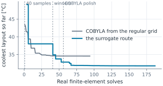
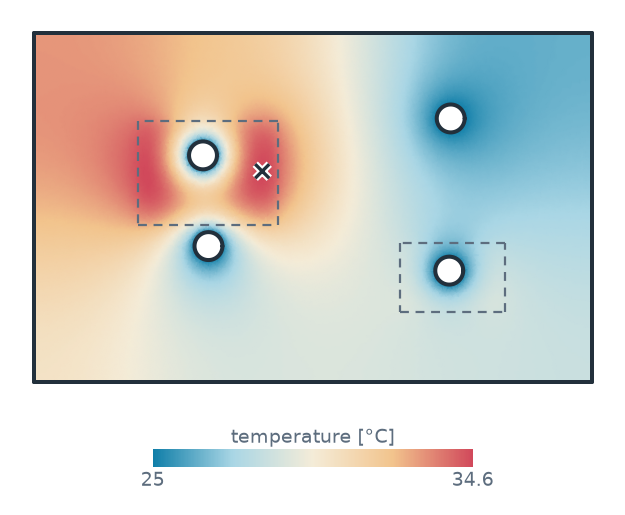
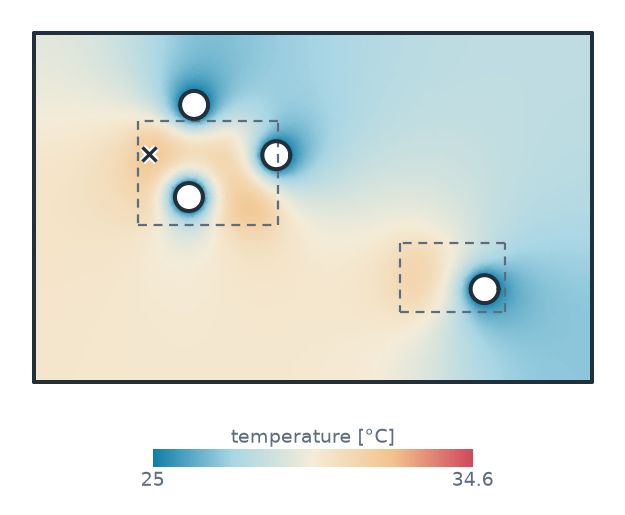

PyTorch
On the SciPy page, COBYLA lays out the cooling channels of a cold plate by calling a finite-element solve for every layout it tries. That takes dozens of solves here, each a fraction of a second, but in a 3D model each solve can take minutes. In addition, COBYLA polishes the layout it starts from, so a different start leads to a different result.
A surrogate model turns this around. It learns the measurement from a few solves spread over the whole design space, and the optimizer searches the model instead of the solver. planex2d supplies everything the model learns from: exact layouts from a constraint sketch, labels from a stored measurement, and the exact wall rule for every candidate. This page trains a small PyTorch ensemble on 40 layouts, lets it pick the winners, solves only those, and compares the number of real solves with COBYLA’s.
[1]:
import math
import numpy as np
import ngsolve as ngs
import planex as px
import planex.measurements as pm
import torch
from scipy.optimize import minimize
from scipy.stats import qmc
A minimal example
The example is a plate of 40 × 20 with a hole whose diameter d is a dimension of the sketch, and the plate’s area is stored as a measurement. Twelve sketches with different values of d give twelve labels:
[3]:
sk = px.Sketch()
sk.Move((0, 0), px.Fix).Rectangle(40, 20, id="plate")
sk.Constrain("plate.Line.1", px.Horizontal)
sk.Constrain("plate.Line.1", px.Distance, 40)
sk.Constrain("plate.Line.2", px.Distance, 20)
sk.Circle(3, center=(20, 10), id="hole")
sk.Constrain("hole", px.Diameter, 6, id="d")
sk.Measure(lambda s: s.Face().mass, id="area")
d = np.linspace(2, 16, 12)
area = np.array([sk.Update({"d": x}).measures["area"] for x in d])
A small network learns the area as a function of d and predicts it for a diameter that was not among them:
[4]:
torch.manual_seed(0)
x = torch.tensor(d / 16)[:, None]
y = torch.tensor((area - area.mean()) / area.std())[:, None]
net = torch.nn.Sequential(torch.nn.Linear(1, 16), torch.nn.Tanh(), torch.nn.Linear(16, 1)).double()
step = torch.optim.Adam(net.parameters(), lr=1e-2)
for _ in range(2000):
step.zero_grad()
((net(x) - y) ** 2).mean().backward()
step.step()
with torch.no_grad():
z = net(torch.tensor([[9.5 / 16]], dtype=torch.float64)).item()
print("d = 9.5: network", area.mean() + area.std() * z, "planex2d", sk.Update({"d": 9.5}).measures["area"])
d = 9.5: network 730.1076058596487 planex2d 729.1178157533803
The plate and its two measurements
The networks from here on are small, so torch runs them on one thread:
[5]:
torch.set_num_threads(1)
The example is the cold plate from the SciPy page: 160 × 100 × 8 of aluminum, with an IGBT with 150 W and a diode with 40 W glued in as named materials, and four channels of diameter 8 placed by eight dimensions:
[6]:
cp = px.Sketch(id="cold plate")
cp.Move((0, 0), px.Fix).Rectangle(160, 100, id="plate")
cp.Constrain("plate.Line.1", px.Horizontal)
cp.Constrain("plate.Line.1", px.Distance, 160, id="width")
cp.Constrain("plate.Line.2", px.Distance, 100, id="height")
grid = [(40, 25), (120, 25), (40, 75), (120, 75)]
dims = []
for k, (x, y) in enumerate(grid, 1):
cp.Circle(4, center=(x, y), id=f"c{k}", name="channel")
cp.Constrain(f"c{k}", px.Diameter, 8)
cp.Constrain(f"c{k}.center", "plate.Line.4", px.Distance, x, id=f"x{k}")
cp.Constrain(f"c{k}.center", "plate.Line.1", px.Distance, y, id=f"y{k}")
dims += [f"x{k}", f"y{k}"]
igbt = px.QuickSketch((30, 45)).Rectangle(40, 30).Face()
diode = px.QuickSketch((105, 20)).Rectangle(30, 20).Face()
igbt.name, diode.name = "IGBT", "diode"
power = {igbt: 150.0, diode: 40.0}
peak(x) sets the dimensions and solves for the peak temperature, as on the SciPy page, and counts every real solve. wall(x) is the thinnest wall, which must stay at least 15 mm. Overlapping channels split the plate in two, which counts as no wall at all.
[8]:
temperature = PeakTemperature(power)
thinnest = pm.MinThickness(ignore_corners=100)
solves = []
def peak(x):
value = cp.Update(dict(zip(dims, x))).Measure(temperature)
solves.append((tuple(x), value))
return value
def wall(x):
plate = cp.Update(dict(zip(dims, x))).Shape()
return plate.Measure(thinnest) if len(plate.faces) == 1 else -1.0
def margin(x):
return wall(x) - 15.0
The baseline: COBYLA from the regular grid
The direct optimization from the SciPy page runs first, counting every real solve. After each solve, best_so_far keeps the coolest layout so far that satisfies the wall rule.
[9]:
def best_so_far(trail):
best, out = math.inf, []
for x, value in trail:
if value < best and wall(x) >= 15.0 - 1e-6:
best = value
out.append(best)
return out
x_grid = [c for p in grid for c in p]
direct = minimize(peak, x_grid, method="COBYLA",
constraints=[{"type": "ineq", "fun": margin}],
options={"rhobeg": 8.0, "maxiter": 600, "tol": 1e-3})
cobyla = best_so_far(solves)
print("COBYLA:", round(cobyla[-1], 2), "°C after", len(cobyla), "solves")
COBYLA: 34.57 °C after 94 solves
40 layouts that fill the space
Each channel may go anywhere that leaves 15 mm to the edges, so its center lies between 19 and 141 along the plate and between 19 and 81 across it. A scrambled Sobol sequence from scipy.stats.qmc spreads 40 layouts evenly over these eight dimensions, and layouts whose channels overlap are skipped. Each layout is solved once, and these are the only labels the model starts with.
[10]:
lo, hi = np.full(8, 19.0), np.array([141.0, 81.0] * 4)
solves = []
sobol = qmc.Sobol(8, seed=3)
X, Y = [], []
while len(X) < 40:
for x in qmc.scale(sobol.random(16), lo, hi):
if len(X) < 40 and wall(x) >= 2.0:
X.append(x)
Y.append(peak(x))
print("40 layouts:", round(min(Y), 2), "to", round(max(Y), 2), "°C")
40 layouts: 36.17 to 90.84 °C
The surrogate
The model consists of five small networks of 2 × 32 neurons, each trained from its own random start, and their mean is the prediction. Two choices make it work with 40 samples:
the four channels are alike, so every plate has 24 orderings of its eight numbers, and
canonicalsorts the channels so that the networks see each plate once;the networks learn log(T − 25), the logarithm of the rise above the coolant, which keeps every prediction above 25 °C.
[11]:
def canonical(x):
channels = np.atleast_2d(x).reshape(-1, 4, 2)
order = np.argsort(channels[:, :, 0] + 1e-6 * channels[:, :, 1], axis=1)
ordered = np.take_along_axis(channels, order[:, :, None], axis=1)
return ordered.reshape(-1, 8)
def inputs(x):
return torch.tensor((canonical(x) - lo) / (hi - lo))
def train(X, Y, members=5, epochs=800):
z = np.log(np.array(Y) - 25.0)
mean, spread = z.mean(), z.std()
target = torch.tensor((z - mean) / spread)[:, None]
nets = []
for seed in range(members):
torch.manual_seed(seed)
net = torch.nn.Sequential(
torch.nn.Linear(8, 32), torch.nn.SiLU(),
torch.nn.Linear(32, 32), torch.nn.SiLU(),
torch.nn.Linear(32, 1)).double()
step = torch.optim.Adam(net.parameters(), lr=1e-2, weight_decay=1e-3)
for _ in range(epochs):
step.zero_grad()
((net(inputs(X)) - target) ** 2).mean().backward()
step.step()
nets.append(net)
def predict(x, chunk=2**16):
x = np.atleast_2d(x)
out = []
with torch.no_grad():
for i in range(0, len(x), chunk):
batch = inputs(x[i:i + chunk])
votes = torch.stack([net(batch) for net in nets])
out.append(votes.mean(0)[:, 0])
z = torch.cat(out).numpy()
return 25.0 + np.exp(z * spread + mean)
return predict
Search the model, solve the winners
A solve takes a sixth of a second, while the model answers a million layouts in one batch, so the model is sampled densely. winners screens 2²⁰ space-filling layouts on the model, keeps the 20 most promising that pass the exact wall rule, polishes those on the model with COBYLA, and returns the five best distinct layouts. Only these five are solved for real. They join the training set, and the ensemble is trained again, for three rounds:
[12]:
pool = qmc.scale(qmc.Sobol(8, seed=11).random(2**20), lo, hi)
def winners(model, k=5, starts=20):
best = []
for i in np.argsort(model(pool)):
if wall(pool[i]) >= 15.0:
best.append(pool[i])
if len(best) == starts:
break
polished = []
for x0 in best:
r = minimize(lambda x: float(model(x)[0]), x0, method="COBYLA",
constraints=[{"type": "ineq", "fun": margin},
{"type": "ineq", "fun": lambda x: x - lo},
{"type": "ineq", "fun": lambda x: hi - x}],
options={"rhobeg": 4.0, "maxiter": 60})
if wall(r.x) >= 15.0 - 1e-6:
polished.append((float(model(r.x)[0]), canonical(r.x)[0]))
chosen = []
for _, x in sorted(polished, key=lambda p: p[0]):
if all(np.abs(x - c).max() > 2.0 for c in chosen):
chosen.append(x)
return chosen[:k]
for round_ in range(3):
model = train(X, Y)
for x in winners(model):
predicted = float(model(x)[0])
X.append(x)
Y.append(peak(x))
print("round", round_ + 1, "model", round(predicted, 2), "°C, solved", round(Y[-1], 2), "°C")
round 1 model 31.94 °C, solved 34.92 °C
round 1 model 31.96 °C, solved 42.03 °C
round 1 model 32.17 °C, solved 35.6 °C
round 1 model 32.19 °C, solved 43.15 °C
round 1 model 32.5 °C, solved 33.75 °C
round 2 model 30.58 °C, solved 55.91 °C
round 2 model 30.67 °C, solved 46.65 °C
round 2 model 30.75 °C, solved 45.4 °C
round 2 model 30.83 °C, solved 52.38 °C
round 2 model 30.84 °C, solved 48.6 °C
round 3 model 32.14 °C, solved 36.08 °C
round 3 model 32.23 °C, solved 36.26 °C
round 3 model 32.24 °C, solved 32.85 °C
round 3 model 32.37 °C, solved 34.12 °C
round 3 model 32.4 °C, solved 38.1 °C
Polish the winner
The model knows the whole plate, but only roughly, while the solver knows one layout exactly. The best layout found so far is therefore passed to COBYLA, which now works with the real solve again, in the basin the model found:
[13]:
feasible = [(y, x) for x, y in zip(X, Y) if wall(x) >= 15.0 - 1e-6]
y_start, x_start = min(feasible, key=lambda p: p[0])
final = minimize(peak, x_start, method="COBYLA",
constraints=[{"type": "ineq", "fun": margin}],
options={"rhobeg": 4.0, "maxiter": 600, "tol": 1e-3})
surrogate = best_so_far(solves)
beats = next(n for n, v in enumerate(surrogate, 1) if v <= cobyla[-1])
print("surrogate route:", round(surrogate[-1], 2), "°C after", len(surrogate), "solves")
print("COBYLA's", round(cobyla[-1], 2), "°C beaten after", beats, "solves, not", len(cobyla))
surrogate route: 31.8 °C after 187 solves
COBYLA's 34.57 °C beaten after 45 solves, not 94
Figure 1 counts every real solve. COBYLA, started from the regular grid, ends in the layout of the SciPy page, with two channels at the IGBT, one at the diode and one far from both modules (Figure 2a). The surrogate route spends its first 40 solves on the space-filling sample. Its winners are rough: the model expects every one of them to beat COBYLA, but they all solve warmer than expected, some far warmer. The best of them, though, puts three channels around the IGBT, a different basin from COBYLA’s, and already a winner of the first round passes COBYLA’s result, before the route has spent as many real solves as COBYLA did. Polished from there with the real solve, the route ends a few degrees cooler (Figure 2b).


(a) COBYLA from the grid: 34.6 °C

(b) The surrogate route: 31.8 °C
More samples alone do not help. With 300 space-filling layouts instead of 40, the model’s mean error on new layouts falls by more than half, yet its winners still solve several degrees warmer than it predicts. The peak temperature is the hottest point of the plate, and where the hottest spot jumps from one place to another, which is just where the good layouts are, it has a kink that a smooth network rounds off. The optimizer then dives into the rounded-off dips. So here the model’s job is to find the basin, and the solver’s to finish.
More
See the field solvers page for the measurement behind every label, the SciPy page for the direct optimization, and part analysis for the measurement system.
In 3D
The same works in 3D, where every solve is a 3D flow and heat problem: a cooling duct lofted through three constraint sketches, updated by a thin wrapper, and optimized by the surrogate.